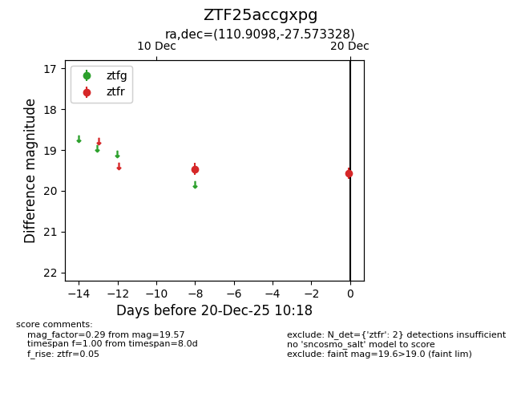
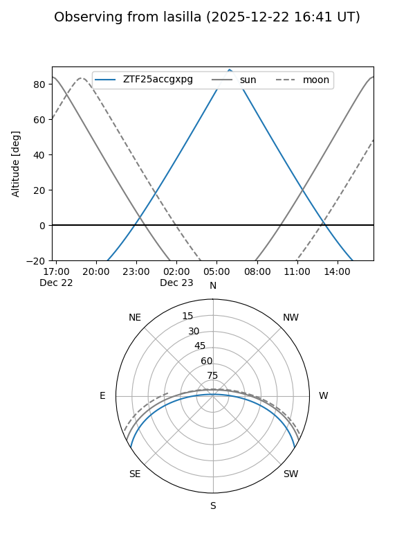
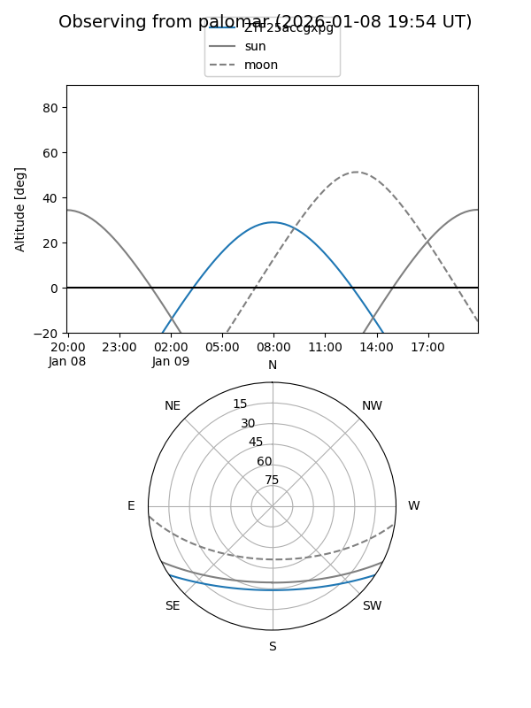
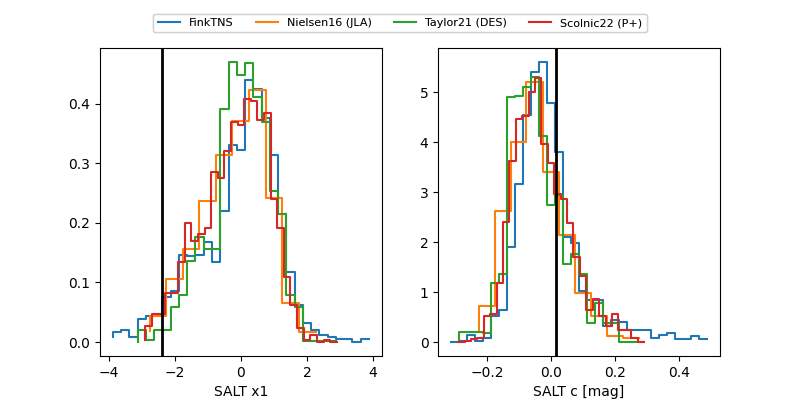

ZTF25accgxpg
Target ZTF25accgxpg at 2025-12-22 18:21
Aliases and brokers:
FINK: fink-portal.org/ZTF25accgxpg
Lasair: lasair-ztf.lsst.ac.uk/objects/ZTF25accgxpg
ALeRCE: alerce.online/object/ZTF25accgxpg
alt names
ZTF25accgxpg (ztf,fink_ztf)
Coordinates:
equatorial (ra, dec) = 110.9098,-27.57333
equatorial (HMS+DMS) = 07:23:38.34,-27:34:23.98
galactic (l, b) = (241.0281,-5.77302)
Flags:
Photometry:
last ztfr=19.63
4 ztfr detections
Lightcurve

Visibility


Additional plots
